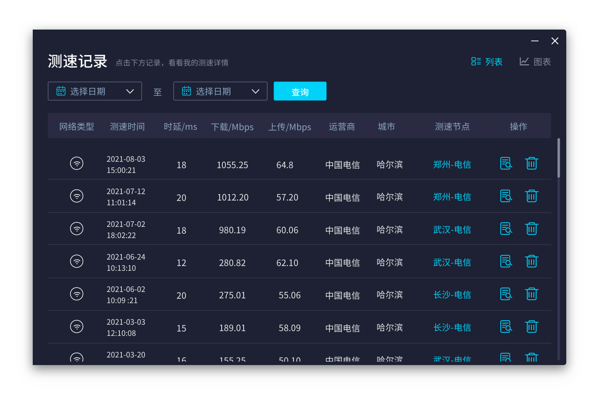

每周网络巡检：我用测速网搭了一条全自动诊断链
以前巡检网络要手动测速、截图、对比、写报告，三步重复劳动。现在一条链自动跑通，每周省出半小时还能盯到长期趋势。
我每周一早八点要做一件固定的事：巡检家里的网络状态。不是因为我有强迫症，而是去年搬了新家之后，Wi-Fi 隔三岔五抽风——周末打游戏丢包、晚上刷视频转圈圈、甚至偶尔连网页都加载半天。打电话给运营商，客服让我"自己测个速截图发过来"，这一来一回就是半小时起步。
以前这套流程是这样的：打开浏览器进speedtest.cn官网的网页版，点开始，等三十秒出结果，截图存到一个叫"每周测速"的文件夹里，打开 Excel 手动填进上周那一行，再拉个折线图对比一下有没有掉速。整个过程要跑三次（网线直连一次、客厅 Wi-Fi 一次、卧室 Wi-Fi 一次），每次至少五分钟，加上截图、填数、看图，半小时就没了。而且截图存多了找不到哪张对应哪周，Excel 里的数字也懒得仔细看——说白了就是做了，但没真用上。
把测速网嵌进流程的哪一环
现在的做法很简单，核心改动只有两个：把网页版换成从官方下载拿到的 PC 客户端，把手动记录换成自动同步。整条链是这样的：
定时触发 → 自动测速 → 云端存结果 → 曲线图自动生成 → 飞书推送一条短消息
第一步的定时触发用的是 Windows 自带的任务计划程序，每周一早八点半自动拉起 PC 客户端的测速入口。测速节点我固定选本地运营商的，避免服务器波动带来的误差。客户端跑完三次测速（有线 + 5GHz Wi-Fi + 2.4GHz Wi-Fi），结果自动存进云端账号，不需要我手动点"保存"。
第二步到第四步几乎不用管。登录账号之后测速网的云端同步是默认开启的，每次测速完成数据直接推上去。客户端里有个曲线图视图，把每次测速的下载、上传、时延按时间串起来，一眼就能看到一天中的波动——通常晚间高峰（八点到十点）网速会掉个百分之三十，周末更明显。我把曲线图的视图截图设置成每周九点钟自动发到飞书文件传输助手，早上到公司第一条消息就是上周的网络巡检结果。

最容易断链的两个环节
这条链跑了三个月，大部分时候都顺畅，但有两个地方出过问题，值得单独讲一下。
第一个是路由器的定期清理。 测速网的speedtest.cn文档里专门提过这个：路由器也是小电脑，长时间运行后内存里的日志和缓存会越积越多，连接设备多了 DHCP 地址租约表也会膨胀。我家那个三年前买的老路由器，跑了一个月没重启之后，Wi-Fi 测出来从 400 Mbps 掉到了 180 Mbps，重启一下立刻回到 380。后来我在任务计划程序里加了一条，每周日凌晨三点自动给路由器断电重启——用的是智能插座的定时功能，不需要路由器本身支持。这个动作插在测速之前，相当于先"打扫"再"体检"，数据更准确。
第二个是云端同步偶尔会漏。 有一次连续两周的测速记录没出现在曲线图里，后来发现是那天客户端启动的时候网络还没连好——Windows 开机后任务计划程序触发得太早，测速网还没连上服务器就开始跑了，结果存了本地没推上去。解决办法是在任务计划程序的触发器里加了"延迟任务 30 秒"的设置，给系统留够联网时间。本地记录其实一直都在，只是没同步而已，手动登录网页版也能补看，但自动推送就断了。
效果到底省了多少事
直接说数字：以前每次巡检要 25~30 分钟，现在打开飞书看一眼消息，30 秒。少了两次手动复制（测速结果抄到 Excel、截图存到文件夹），少了一次对比分析（曲线图自动帮我做了），更重要的是不会忘。以前忙起来就跳过一两周，现在飞书消息不看就会一直挂在那里，倒逼我瞟一眼。
更实际的收益是发现了以前注意不到的长期趋势。曲线图跑了两个月之后，我发现每次路由器重启后的那一周网速最稳，第三周开始波动变大——这直接支撑了我把重启频率从两周一次改成每周一次的决定。还有一次，卧室 Wi-Fi 的测速结果连续三周掉了 100 Mbps 左右，去看了一眼路由器位置，发现被我妈挪到了电视柜下面挡了大半，挪回来第二天就恢复了。这些都是单次测速看不出来的，必须有连续的数据对比。
什么时候这套流程不划算
说两个边界情况。一是如果你租的房子、路由器是房东的，那路由器重启这一步就做不了，整个流程退化成"自动测速 + 云端记录"，少了前置的清理环节，数据质量会打折扣。二是如果你本身网络就没问题——千兆宽带配 Wi-Fi 6 路由器，测速常年稳定在 900 Mbps 以上，那每周巡检纯属鸡肋，改成每月一次足够。
对我来说这套流程的性价比很高：花了不到半小时配置，每周省出半小时，还解决了之前网络抽风找不到原因的老大难问题。如果你也被"网速忽快忽慢但又没数据说话"这个问题困扰，不妨试试把测速网嵌进自己的一条小流程里——不用搞多复杂，自动测速加自动记录就够了。
这套资料我同步放在了三个代码仓库里，方便不同网络环境下查阅：GitHub 上有完整的文档目录，Gitee 对国内访问更友好，GitCode 做了额外的备份镜像。